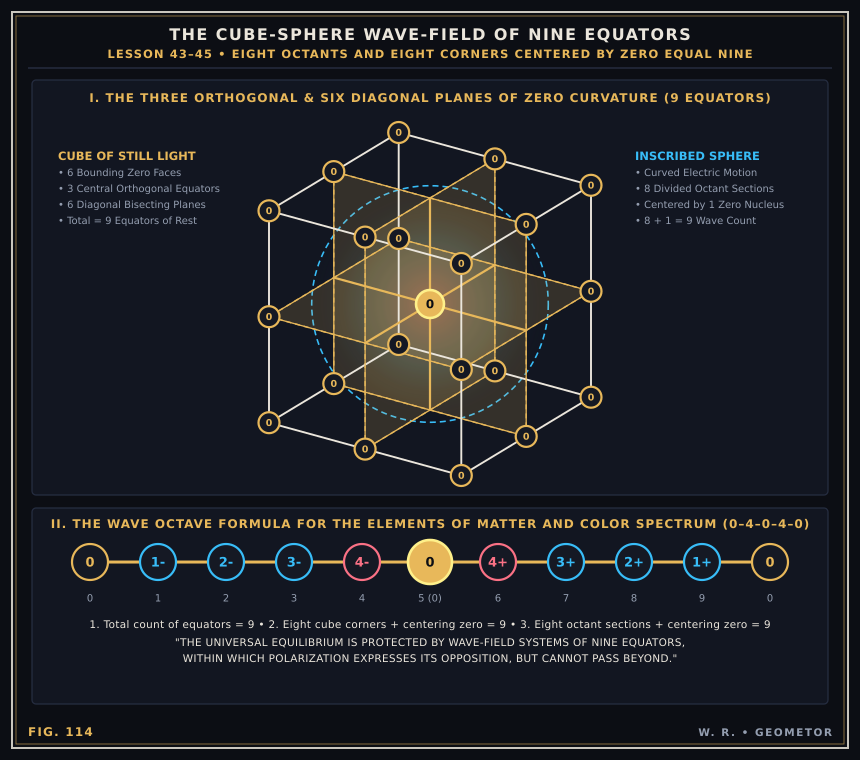
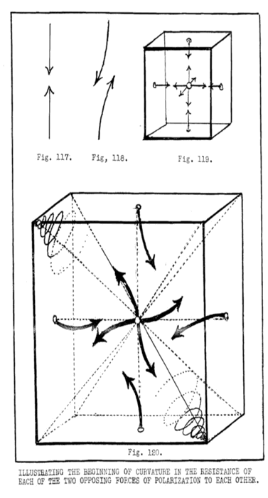
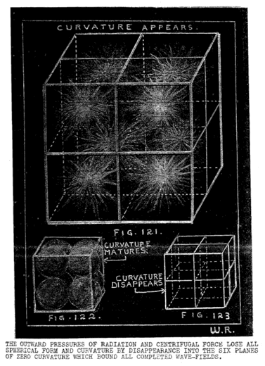
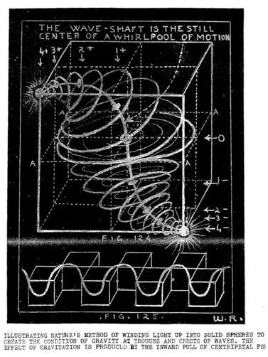
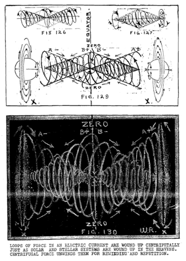
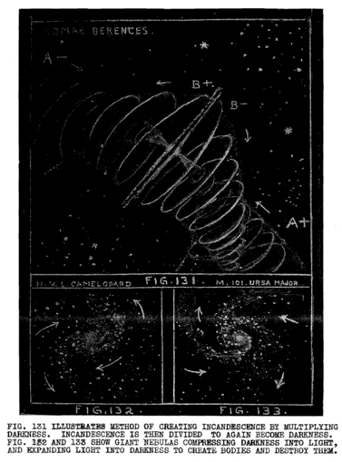

LESSON NUMBER 45 PRELUDE TO LAST FOUR LESSONS¶
GEOMETOR Revamped Cosmogony Plates
This lesson’s core geometric diagrams have been reconstructed as precision parametric vector plates:


GEOMETOR Vector Reconstruction (Fig. 114): The Cube-Sphere Wave-Field of Nine Equators (0–1–2–3–4–0–4–3–2–1–0).¶
Not one word of science, philosophy or law has been written in these lessons simply because they were science, philosophy or law, but because they are God’s ways which you must know in order to make God’s ways YOUR ways.
The more you know how God controls His power to create His orderly, balanced universe, the more you can use that power to control the universe you are creating around the center which is YOU.
God expresses His power because He IS power. God expresses love because He IS love. God manifests law because He IS law.
When your KNOWING places you at the still center of the universe which YOU are creating, so that all of its power stems from YOUR KNOWING instead of from your SENSING, then YOU are that power which extends from the still center which is YOU into that electric universe of your body and its extensions which YOU are creating.
We are not trying to make scientists or philosophers of you. We are trying to awaken within you an awareness of the Source of all science and philosophy by knowing God’s ways sufficiently to make His ways YOUR ways.
God’s command as given in The Divine Iliad was that all men must know God. These were His words: “See Me, know Me, be Me. Be thou the fulcrum of thine own power.”
The fulcrum from which all power springs is KNOWLEDGE. When you have that Omniscience which is unfolding in Cosmic Man you will no longer misuse, break or disobey God’s law, because of being unaware of it, you will COMMAND it because you KNOW the law from being the law.
We are teaching science, philosophy and law to you only for the purpose of awakening God awareness in you, and not for the purpose of adding to your cultural achievement, or for raising the standard of your educational status.
When we explain how Nature perpetually polarizes and depolarizes, in its every expression, we do so because you do that in your every action. You do it each second of your life in your breathings–each hour of the day in unfolding and refolding, but you are not aware of it.
Mankind has not yet learned the continuity of life and death–and that each leads to the other. When life depolarizes and “dies” it is for the purpose of rebirth. When a business man buys goods or builds a plant he is depolarizing and devitalizing his strength for the purpose of multiplying it. That is also the reason you go to sleep at night. You are devitalized. Your power to polarize has reversed by depolarization. You sleep to again reverse it and awaken to find that you have reversed it.
When we explain to you the process of turning inside-out and outside-in it is for the same reason that you also are engaged in that occupation every moment of your life and do not know it. You find yourself making mistakes and do not know their remedy. You are in trouble and do not know what to do about it. When you do know God’s ways you will not make mistakes without knowing
WHY, or be in trouble without knowing how to make of it a steppingstone to greater things.
That is the reason why we briefly climax our lessons to you by revealing the essentials of God’s ways to you. Volumes more could be written which would but give you greater detailed knowledge of each essential, so we but touch lightly upon details and mechanics, but strongly upon principles.
By the time we reach lesson 48 we will have unfolded enough of the underlying principles and practice of God’s ways for you to understand the transcendent meaning of that last revealing chapter which tells you things that no man of earth has yet written down for man, nor would it have been understood if it had been written down.
This whole Course of lessons has been for the purpose of transforming your thinking and your knowing so that you would be able to comprehend what is written in Lesson 48 which would otherwise be meaningless to you.
We will proceed, therefore, to briefly complete the essential working principles of God’s plan for your greater understanding. It would take many volumes of great detail if your purpose was to become a professional chemist, metalurgist or electrical engineer.
CURVATURE AND SPIRALS¶
The whole basis of curvature in Nature stems from the fact that the equilibrium of Nature is divided into two opposite forces which we call positive and negative electricity. Positive electricity polarizes forming bodies to record the concentrative thinking of The Creator of bodies, and negative electricity depolarizes bodies to record The Creator’s decentrative thinking. These two are the
father-mother principles which integrate and disintegrate in eternal repetitions.
The thought action-reaction of the two electric forces expands outward from a center–like an outward explosion, and contracts inward toward that same central point, like an inward explosion.
An infinite number of radii thus extend outward to meet an infinite number of radii which are returning. Radiating force thus meets gravitating force as both travel in opposite directions. They resist each other because they oppose each other.
As each one of these forces have to pass through the other one on their outward or inward journeys,–like a stone falling to earth or vapor rising from it,–each must give way to the other’s resistance by bending around each other.
Figures 117 and 118 illustrate this principle. Two opposing forces cannot meet head on, as in 117, so they intertwine as they pass through each other. Figure 118 illustrates that bending of the two opposing forces passing through each other radially. If you examine the wood of an old tree which has lost its bark you will see the effect of that resistance by the spiral growth in the wood from ground to the top of the tree. The slow growth of the tree lengthens the spiral whereas more quickly timed explosions than those of tree growth shorten the spirals.
All through Nature you can see this principle demonstrated in the growth of everything, or in all effects of the motion of waters and winds. You will note this effect in the spiral twisting of water falling down the drain of your bathtub, or in the sudden meetings of winds in whirling the dust at their meeting points, or the violent spirallings of falling and rising air currents which twist so furiously around their zero points of equilibrium that houses are torn from their foundations in the tornado whirlpools while not a blade of grass stirs at their zero centers.

Archival Plate (image077.gif)¶
Figure 119 illustrates the same principle as 117 except that six pairs of oppositely directioned forces are meeting in a wave-field. Note the beginnings of spiral twistings resulting from resistance by each for the passing of the other as illustrated in Figure 120.
If the outward explosive effect of radiation met with no resistance its effects would dissipate radially, but it is opposed by gravitation. Opposition between the two is repeated throughout the universe within wave-fields of opposing pressures, but all opposition is voided at wave-field boundaries where all motion seeks rest and balance.
The repeated waves of motion taking place anywhere, as illustrated in Figure 121, do not radiate equally in every direction from their centers. That would be impossible because such equality of pressure would not fill all space in wave-fields.
Equality of pressure would form spheres as a result of the action of the outward giving of radiation. Spheres are formed at the corners of wave-fields where eight diagonals meet in the vortex caused by spiral twistings in the diagonal direction.
You will note by Figure 122 that six [eight] spheres formed by six [eight] harmonics would not fill all space when they met together in six places upon cube diameters [handwriting unreadable– see image below].
The empty space between the spheres must also be filled. For this reason the pressures of the outward thrust of radiation meet with greater resistance at cube diameters than they do at diagonals, which are much longer.
Because of the much lesser resistance at diagonals than at diameters, radiation seeks the lines of least resistance to its outward pressure and spirals toward the corners of cubes with increasing speed as centripetal force multiplies in the apices of the vortices thus formed.
You will comprehend this much better if you imagine the spheres in Figure 122 to be rubber balls being inflated within cube enclosures. If the inflation is continued sufficiently the spherical shapes of the rubber balls would disappear into the cubes within which they are compressed as shown in Figure 123. This is not an exact analogy because the inflation of rubber balls would form true spheres until they met at six points, but the outward thrust of radiation would not be spherically equal in pressures because of the greater resistance met within these six directions than in the eight diagonal ones.
ANOTHER STEP TOWARD THE GREATEST OF ALL LESSONS¶
The great lesson of life is to learn that the measure of giving is the measure of regiving. Nature manifests this principle in every action-reaction.
The measure of electric potential given out by desire in the seed of a tree is regiven in the measure of the tree. That is not sufficiently great a measure of electric potential to create an earth or sun, but it is sufficient for a tree. The intensity of desire in man to create in large measure is the same in principle as the intensity of desire in Nature to create a solar system. Every action of outgiving by man or nature is regiven toward the point of giving in the measure, quality and pattern of the outgiving.

Archival Plate (image078.gif)¶

Archival Plate (image079.gif)¶
Let US study Figure 124 together to see the working of the law of equality in all action-reactions.
At the center of the cube is the point of desire for outward giving. It is marked zero. From that point of extension the desire reaches outward, radially, like an outward explosion, such as you see in Figure 121, meeting with the resistance which spirals its effect of polarity, such as you see in Figure 124.
Now take note that the maximum of outward giving is reached upon the plane marked A, A, A, A, which is the wave axis. Upon that plane the REGIVING also begins and expresses itself centripetally from the base of a cone to its apex in spiral twistings which wind light up around wave shafts from large expanded volumes into small compressed ones. Outward GIVING is RADIATION in electrical terms, and inward REGIVING is GRAVITATION. In mental terms they are DECENTRATION and CONCENTRATION.
That is the way God makes bodies. He first conceives them, or imagines them, by decentrative thinking. He then gives them the body forms of His imaginings by concentrative thinking.
And that is the way you make bodies, whether they be parts of your own body, or machines which you have imagined. The body you make can be only the image of your imaginings and the measure of your desire. The quality and pattern of your outgivings will crystallize into body form in the image of your thinking. That is LAW. What you give out will return in your image.
Now let us look at Figure 124 from another angle. In past lessons we repeatedly stated that each opposite of a polarized pair borns its opposite and reverses its own polarity to become its opposite.
Note the workings of God’s ways in this respect. The extension, or outgiving, from zero is manifested centrifugally by expansion toward the cold dark of surrounding space. The retraction, or regiving, toward zero, is manifested centripetally by contraction toward the white incandescence of hot suns.
Gravitation is thus born from radiation to reborn radiation.
Life is thus born from death to reborn death to life.
Outbreathings spring from inbreathings to again become outbreathings.
Cold borns heat to become cold for again reborning heat.
Centripetal force is the reaction of centrifugal force which fathers the borning of centripetal force.
And none of these could be without desire–desire to divide idea into thought imaginings–desire to polarize in order to create–or to achieve–and to record creations or achievements in material bodies.
That is what God’s universe is–and that is what YOUR universe is–your DESIRE recorded in BODIES, by the THINKING of your MIND.
ALL OPPOSITES IN NATURE TURN INSIDE OUT AND OUTSIDE IN¶
When Nature desires to create a solid body of matter it first expands and evacuates a great volume of space. This causes a great black hole where space has been evacuated.
The light within it has been seemingly “taken out” to create dark–and that which has been thus “pumped out” has been simultaneously wound up centripetally to create incandescence.
Darkness is an effect produced by dividing light into long light-waves–and incandescence is the opposite effect produced by multiplying light by shortening its light-waves.
Solidity is thus born out of vacuity. A positive pole is created on one side of a dividing equator and its equal negative opposite is created on the other side.
“Empty space” is thus created simultaneously with its centering suns, just as the two poles of a bar magnet are simultaneously created. As the suns are gradually wound up inside black holes of space the interchange between the two becomes more and more intense. The winding up into centripetal vortices multiplies gravitational power and radiational power alike. The power of gravitation to pull in, however, exceeds the power of radiation to resist it during the half cycle in which true spheres are being formed, and then the power of radiation increases to unwind the spheres in the other half of the cycle. As radiative power increases, the cold black holes of space which are outside of hot suns bore right through the suns and dissipate them centrifugally by making rings of what have been spherical suns for billions of years. There are hundreds of examples of these rings in the heavens but a conspicuously good example of rings in this solar system are those which surround Saturn, (see Figure 135) and a good example among the distant nebulae is the great ring in Lyra, shown in Figure 134. For these and other stellar examples see Figures 136, 137, 138 and 143, in the following lesson, No 46.
Rings again polarize and become satellites, such as planets around suns–for all planets are first rings thrown off by the sun–and moons which revolve around planets–for moons are likewise polarized rings which have been thrown off by planets.
Space is on the outside of compressed bodies which have evacuated space by the power of gravitation to pull inward from within. Space then acquires the inside of compressed bodies by the power of radiation to thrust compressed matter outward from within.
Radiation is forever thrusting compressed matter out into the black hole of space which surrounds it in order that radiation can then become gravitation and wind matter up again from the black hole of voided space into the solid spheres which gravitation produces. Gravitation produces spheres but radiation divides them to produce systems of spheres. See Figure 131.
Thus it is that the two opposite forces of gravitation and radiation are forever interchanging to keep the piston of the universal heartbeat forever pumping in its manifestations of life and death, growth and decay, appearance into form and its disappearance, to record the concentrative-decentrative thinking of The Creator in the fulfilling of His Law of Love in giving and regiving.
In order that you may thoroughly understand these inside-out, outside-in turnings of electric action-reactions, we will take one numbered step at a time to describe the process in words, and then diagram these steps to simplify their understanding.
To do this we must replace the following misconceptions which are fundamental beliefs of present day science with true conceptions which are demonstratably provable as conforming to Natural Law.
The expanding universe theory. It is believed by science that the universe was created aeons ago as one great ball of fire which is now being divided into stellar systems, all of which are expanding toward a disappearance which they call heat death–or entropy.
Science bases this theory upon the provable fact that all of the great stellar systems which they can see in their telescopes, are rushing away from each other with incredible speeds. This fact is true, and the assumption that the universe is dying a heat death is also true, but that which science does not see is that birth continues to live as death continues to die. It would be equally true to say that all living beings are dying–but they are perpetually borning. They balance each other.
Expansion of heat toward the cold of death is balanced by the contraction of cold toward the heat of life.
This is an expanding-contracting universe. Contraction in it equals expansion to the weight of a milligram in the whole universe, but science does not see the contracting effect which balances expansion, because it does not know where to look for it. That secret must also be revealed.
The birth of planets theory. It is the commonly accepted belief that the planets of this solar system were “pulled” out from our sun by some accidentally passing star. Because of this belief it is presumed that our sun may be unique as being the only one which has planets, for such an accident might not occur once in hundreds of billions of years.
This theory is not true to Natural law, Suns could not collide, nor could they vary their ordained balanced paths in their wave-fields by even one inch. Planets are not born that way. They are born from rings thrown off by the sun’s equator, just as moons are likewise born from rings thrown off from the equators of planets. All atomic, solar and stellar systems are born that way. This secret must also be revealed.
Science believes that the moon would fall upon the earth except for an initial impetus given by it which is just fast enough to keep the moon from falling upon the earth and not fast enough to make the moon fly off at a tangent into space. Sir Isaac Newton thought that he had proved this theory mathematically, but there were so many things which Newton forgot, and so many others which he did not know, that his mathematics are useless.
Planets are not falling into their suns, nor are moons falling into their planets. The exact reverse is what is happening. All planets are slowly spiraling centrifugally AWAY from suns and all moons are likewise spiraling away from planets. More than that, all suns and stellar systems in our great nebulae, such as our own Milky Way, are spiraling away from their central sun. This mystery must also be clarified.
Structure of the atom theory. Science has a strange belief about atomic structure which has no basis in Nature whatsoever. Science conceives that the nucleus of an atom is made up of certain numbers of positive and negative “charges” in corpuscles called protons. These are surrounded by concentric shells of electrons which determine the substance of the element by their number and arrangement in the shells which control their orbits. Every electron added presumably changes the character of the substance to another element.
Nature does not work that way. All matter is electrically polarized to manifest both of its polarized characteristics in every mass. Every corpuscle of matter in the universe, whether atom or sun, is divided by an equator between its two hemispheres, one for its north pole and one for its south pole.
Every particle of matter, or mass like our Earth, radiates and gravitates, and these are not confined to hemispheres where gravitation functions alone in one, and radiation alone in the other. Both function in the whole mass and in both hemispheres. Even the two poles of a bar magnet manifest both positive and negative abilities to pull inward and thrust outward.
The theory of separately charged particles has, therefore, no precedent in Nature. Every atomic system follows the same law that solar and stellar systerns follow. These you can see by the hundreds in the heavens, and there is not one of them which is not centered by one doubly charged polarized mass, which marks the point of highest potential in its system, and is surrounded by lesser masses of lowering potentials whose orbits are elliptical because all are in planes which are conic sections cut at angles to conic bases.
There are no atomic, solar or stellar systems which have circular orbits. Even those which are upon the plane of wave amplitude, such as carbon, are centrifugal during the transition from one side of the equator to the other. Circular orbits are impossible in nature for there are no spherical systems, such as modern science has conceived, to cause them. This principle must be clarified to bring the structure of the atom within the wave instead of outside of it.
No theory of science is valid which will not fit into the wave, for waves are all that are, in Nature.
The Quantum Theory of science is generally accepted as fundamental. It is so untrue to Nature as to belong to the realms of pure fantasy. In it varying corpuscles of matter have cavities within them which are punctured by holes just large enough in each case to let light through to set microscopic “resonators” in vibration. The origin or nature of the resonators is not given, nor are they accounted for by any law or process of Nature. As this theory is but pure invention, and has no place in Nature whatsoever, we shall not spend time or space in explaining it away for there is nothing to explain. We merely present it to show how hopelessly science is trying to build up a reasonable cosmogony upon the radically wrong principle of Nature that energy is expressed by only one of the two poles of this equally polarized universe, and is, therefore, non-reciprocative.
There are many other misconceptions, but space is too limited to give even casual mention to more of them.
THIS EXPANDING-CONTRACTING TWO-WAY BALANCED UNIVERSE¶
Step by numbered step we will unfold the only process which The Creator makes use of to cause the motion which builds and destroys the bodies of Creation, for rebuilding and redestroying forever.
Motion is impossible in an equilibrium. To produce motion the equilibrium zero must be divided into two equal and opposite conditions and extended from an equator into which both conditions must return and be voided.
The two conditions thus produced by the division are gravitation, which compresses motion into small volumes called matter, and radiation, which expands motion into large volumes called space. The two are equal.
Gravitation compresses motion into visible, incandescent solids by pulling inward toward a point and thrusting space outside of it to surround it. Incandescence is a “product” of gravitation.
Radiation expands motion into invisible vapors and gases by acquiring the inside position within solids and thrusting outward from the inside of solids and letting space in on the inside. Darkness is the “product” of radiation.

Archival Plate (image080.gif)¶
The resultant repetitions of action-reaction sequences caused by the interchange of motion between these two opposing forces in their attempt to conquer the other, become the basis of a universal compression expansion pump which makes of this universe a two-way alternation between visibility, as motion compresses matter into appearance,–and invisibility, as motion expands matter into disappearance.
Let us now demonstrate the workings of the electric pump which is our universe by following the process of its workings upon the accompanying diagrams.
Figures 126 to 130 represent an electric current which is dividing an equilibrium into compression-expansion conditions and extending the effect of that division along a wire. Figure 127 shows the effect of the outward explosion of radiation which creates a great volume of evacuated space extending radially from the zero center of the division.
Now note that the equator which divides the two opposing forces become the bases of two cones whose apices head in opposite directions.
The outward explosive centrifugal action which formed the bases of the two cones simultaneously reacts to pull inward centripetally toward apices which are whirling vortices of ever increasing intensity and speed of motion.
Carefully observe how these opposing centripetal vortices come to points of rest in the apices of cones where they become centers of gravity for the system; of matter which are wound up by those two whirling spirals. The two opposing centripetal spirals are pictured alone in Figure 127. In Figures 129 and 130 they are marked B+ and B-, meaning positive and negative.
As a result of intensive spiral twistings and the resultant compression of motion toward points which center hot spheres, an equally intensive centrifugal force is born which is evidenced by throwing off wheel-like discs which eventually spin upon planes at 90 degrees from the shaft which winds them, and become the poles of rotation for the bodies they have thus wound up into spiral
wheels whose hubs are suns and whose multiple rims are planets and moons whirling in elliptical orbits around their centers.
In Figures 129 and 130 you will see two whirling disc-like wheels marked X and X which are called loops of force in an electric current, or the element called carbon in the wave-field, or a giant nebula in the heavens. The building of the bodies of atoms does not in the slightest degree vary from the process of building bodies such as the Milky Way.
The loops of force in an electric current, such as shown in Figure 130, are exactly like the stellar “loop of force” seen in the heavens named Comae Berences, as shown in Figure 131, even though one may be an inch in diameter and the other a hundred light years. In this diagram you see the spinning wheel on edge, but if you could see it while facing its hub it would look like Figures
132 and 133. These two nebulae are in Camelopard and Ursa Major. The inward pointing arrows in the black lanes of these two spiral nebulae are the inward pulling centripetal spirals which wind their centering suns by the way of their poles. The outward pointing arrows are the outward thrusting centrifugal spiral spokes of the wheels which gradually unwind suns and planets of suns by the way of their equators. All matter is generated by the way of its poles and dissipated by the way of its equators.

Archival Plate (image081.gif)¶
The next step in the process of building bodies after winding them into true spheres is to unwind them centrifugally into disc-like wheels which again form bases of cone pairs whose apices are opposed to each other. Unfolding must follow folding, depolarization must follow polarization. The “living” must “die” to live again in this pulsing two-way universe of waves of motion.
Now again centripetal force winds up the motion of expanded matter into centers of gravity which were the zeros of the black holes of their beginnings. The piston of the universal heartbeat again swings from its expanded condition toward compression.
You will better comprehend this by again referring to Figures 101 and 102 on page 733. You will there clearly understand how the crests and troughs of waves, where gravity has compressed, must interchange with their opposite conditions on the other side of their equators, and each then become the other.
The black holes of evacuated space draw the centripetal vortices of gravity into their centers to again become hot suns. The centripetal vortices marked AA in Figure 129; and BB in Figure 131, have rewound the expanded motion of the disintegrating spiral wheels into motion which reintegrates. Radiation has reversed itself in this piston stroke to become gravitation as the opposite pair reversed themselves in the first described piston stroke.
We trust that you will review this effect over and over again until you are thoroughly familiar with the way gravitation pulls inside of space to create solid bodies, leaving space on the outside, and the way radiation then thrusts solid bodies apart to again gain the inside.
We shall now consider the expanding spiral wheels in greater detail so that the polarization-depolarization process which gives to all matter its life-death cycles will be more clearly understood, especially by science which has not yet observed that there is a compensating force which gives rebirth to dying radiant energy.
Once again we repeat–THERE IS NO DEATH IN ALL THE UNIVERSE–that which disappears MUST reappear. Reappearance is unavoidable. Repetition is the law of Nature. Repetition and reincarnation are ONE.